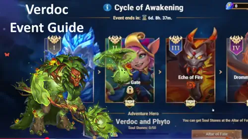
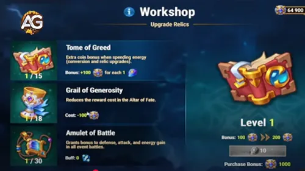
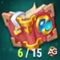
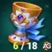
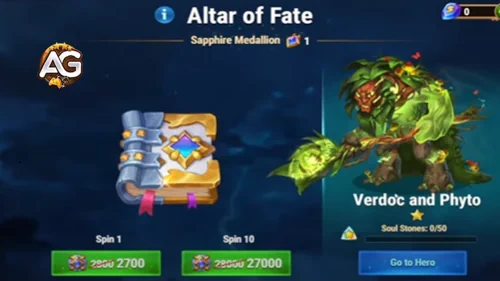
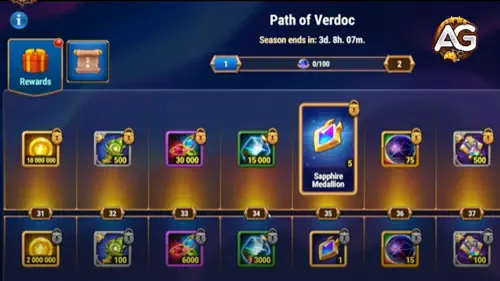
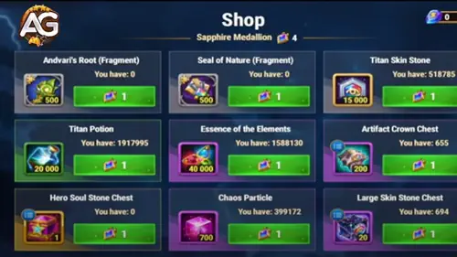

The answer is yes it’s absolutely possible to unlock Verdoc and Phyto efficiently, even if you’re a free-to-play player. However, it requires careful planning, smart resource management, and knowing which event mechanics to prioritize.
In this guide, you’ll discover everything about the Cycle of Awakening event how it works, how to progress faster, and the most effective ways to secure every valuable reward without wasting Emeralds or resources.

Verdoc and Phyto Event in Hero Wars: Dominion Era, a game developed by Nexters.
🌿 Who Are Verdoc and Phyto?
Verdoc and Phyto are a unique pair of Earth Titans 🌱 who act as one symbiotic unit. Phyto, a plant-like being, draws energy from Verdoc’s summoner powers to command nature itself controlling vines, roots, and thorns that immobilize enemies and fortify allies. This duality makes them one of the most strategic additions in Hero Wars: Dominion Era.
Role: Summoner
Element: Earth
Position: Middle Line
Their gameplay introduces a refreshing combat mechanic that rewards tactical play and timing. When paired with Titans like Nova and Moloch, they create devastating stun-lock combinations that can completely disrupt enemy formations. They also boost Earth Totem activation frequency, giving Earth teams a strong advantage in both PvP and Guild Battles.
How the Guardian of Balance Event Works
The Guardian of Balance event focuses on Verdoc and Phyto’s awakening as Earth Titans. It features quest chains covering Titan leveling, evolution, artifacts, and skins. Completing them grants Titan Potions, Elemental Spheres, and event currencies to unlock and upgrade Verdoc and Phyto.
Free-to-play players should complete all main Guardian quests first, as they give the best evolution materials. The event progresses from simple tasks to advanced goals like artifact upgrades. Each mission strengthens both Titans and advances overall progress.
To evolve Verdoc faster, focus resources on Verdoc and Phyto only. Avoid spending on other Titans during the event, and complete “Growth Reward” missions for top-tier Titan resources.
Verdoc Missions
The event includes Verdoc-specific missions focused on leveling, evolving, and boosting his power. Completing these tasks grants valuable rewards and speeds up event progress. Since missions can be repeated, focus on finishing all Verdoc upgrades early to unlock higher reward tiers faster.
Verdoc Coins and Earth Crystals
Verdoc Coins are used in the Earth Altar to exchange for Verdoc Soul Stones and exclusive rewards. Earth Crystals fuel the Event Workshop, allowing you to upgrade relics that boost resource gains. Use Verdoc Coins mainly for Altar pulls targeting his Soul Stones, and spend Earth Crystals on workshop upgrades that improve efficiency and reduce costs.
The Event Workshop: Verdoc Upgrade Priorities
The Event Workshop is central to Verdoc’s growth. Focus first on the Tome of Greed, which lowers costs and boosts rewards when spending Earth Crystals or leveling relics, greatly improving resource efficiency. Next, upgrade the Tome of Generosity to increase Verdoc Soul Stone gains over time. The Amulet of Battle comes last it helps in battles but is less crucial than maintaining a steady supply of Soul Stones and event currency.

Verdoc Event Workshop, Hero Wars Dominion Era.
Strategy Tip: Maximize the Tome of Greed First
Always upgrade the Tome of Greed first. Even at low levels it reduces costs, and by max level, the rewards are substantial. Lower altar pull costs and higher energy returns let you farm more Verdoc Soul Stones efficiently to absolute star, speeding up overall event progression.
Item
Level

Tome of Greed
Minimum Upgrade 6

Grail of Generosity
Minimum level 6. Only level up Grail of Generosity after the Tome of Greed reaches at least level 6.
The Earth Altar and Soul Stone Farming
Use the Earth Altar primarily for Verdoc Coins to get his Soul Stones and other rewards. Always pull in batches of 10 for maximum efficiency. Upgraded Workshop levels reduce the cost per batch, making it easier to reach the Soul Stones needed for six stars. Focus coins on batch pulls rather than single spins.

Verdoc Event The Earth Altar, Hero Wars Dominion Era.
Free-to-Play Path to Six Stars
F2P players should complete all Stage 1 and 2 missions, repeat Verdoc missions until fully done, max the Tome of Greed, and use Earth Altar pulls in 10x batches. Prioritize Verdoc Soul Stones over other items and save excess energy for daily missions. With consistent effort, six stars are achievable without spending money.
Getting a new Titan like Verdoc to six stars as a free-to-play player is more challenging than during a new hero event. However, it’s absolutely possible with the right preparation and dedication! As shown in the screenshot above, I managed to reach six stars two days before the event ended by following these strategies carefully.
To make your progress smoother, start preparing before the event begins. Save a large amount of Gold for upgrading the Seal artifact level, and gather plenty of Essence of the Elements to enhance Verdoc’s Crown and Weapon artifacts and also Titan Skin Stones. Following these tips from Alexandre Games will help you stay ahead and maximize every resource during the event.
The Verdoc Battle Pass costs around $30 and does not include a new skin. Instead, it features Verdoc’s exclusive weapon and seal artifacts, which are unique and likely obtainable only during special events or through cash offers. While free-to-play players can safely skip it, spenders will gain faster progression thanks to the Emeralds, Soul Stones, and rare resources included.

Verdoc Event Battle Pass, Hero Wars Dominion Era.
What to Buy in the Event Shop
In the event shop, focus first on purchasing items that help you complete event missions efficiently. After that, prioritize the new and exclusive artifacts the weapon artifact Andvari’s Root and the seal artifact Seal of Nature. These unique items are likely obtainable only during this event or through cash offers, making them highly valuable for players aiming to strengthen Verdoc and their Earth teams.

What to Buy in the Verdoc Event Shop, Hero Wars Dominion Era.
Since Verdoc Soul Stones are earned through other missions, use your shop currency wisely on long-term upgrades. Prioritize pet energy and skin stones, as they provide lasting progression benefits. Other hero Soul Stones are optional, and totems or upgrade materials should be chosen based on your current needs. Avoid consumables like energy potions and save your resources for the most impactful items.
Mistakes to Avoid
Don’t waste currency on low-value consumables. Avoid prioritizing flashy items over Verdoc Soul Stones if your goal is six stars. Skipping Workshop upgrades is also a mistake upgrading tomes early maximizes long-term gains.
The Verdoc Event in Hero Wars: Dominion Era rewards careful planning. Prioritize missions, max the Tome of Greed, and focus resources on Soul Stones. Use the Earth Altar efficiently with 10x pulls. The event skin is optional; six stars on Verdoc is the main goal. With patience, you’ll unlock him and strengthen your roster significantly.
🌿 Guardian of Balance - Verdoc Event Missions
The Guardian of Balance - Verdoc Event celebrates the unity of Earth Titans Verdoc and Phyto focusing on their growth, evolution, and artifact enhancement.
By completing event quests, players can obtain valuable resources such as Titan Potions, Skin Stones, and Artifact Fragments, helping to strengthen their Earth teams and prepare for high-level elemental battles in the Dungeon and Clash of Worlds.
🌱 Birth of Will
Level up your Titans Verdoc and Phyto 20 times
Level up your Titans Verdoc and Phyto 40 times
Level up your Titans Verdoc and Phyto 60 times
Level up your Titans Verdoc and Phyto 80 times
Level up your Titans Verdoc and Phyto 100 times
🌊 Exodus from the Aether
Reach Evolution Level 2 for Cascade
Reach Evolution Level 3 for Cascade
Reach Evolution Level 4 for Cascade
Reach Evolution Level 5 for Cascade
Reach Evolution Level 6 for Cascade
🌍 Traits of Earth
Upgrade the Default Skin of Verdoc and Phyto to Level 5
Upgrade the Default Skin of Verdoc and Phyto to Level 10
Upgrade the Default Skin of Verdoc and Phyto to Level 20
Upgrade the Default Skin of Verdoc and Phyto to Level 30
Upgrade the Default Skin of Verdoc and Phyto to Level 40
Upgrade the Default Skin of Verdoc and Phyto to Level 50
Upgrade the Default Skin of Verdoc and Phyto to Level 60
💎 Shards of Eternity
Reach Artifact Level 10 for Verdoc and Phyto
Reach Artifact Level 20 for Verdoc and Phyto
Reach Artifact Level 40 for Verdoc and Phyto
Reach Artifact Level 60 for Verdoc and Phyto
Reach Artifact Level 80 for Verdoc and Phyto
⚒️ Elemental Smithing
Spend 12 Elemental Spheres
Spend 24 Elemental Spheres
Spend 42 Elemental Spheres
Spend 60 Elemental Spheres
Spend 90 Elemental Spheres
Spend 120 Elemental Spheres
Spend 150 Elemental Spheres
Spend 180 Elemental Spheres
Spend 210 Elemental Spheres
Spend 240 Elemental Spheres
Spend 270 Elemental Spheres
Spend 300 Elemental Spheres
Spend 330 Elemental Spheres
Spend 360 Elemental Spheres
🌟 Growth Reward
Complete 16 quests in the "Guardian of Balance" event
Complete 19 quests in the "Guardian of Balance" event
Complete 22 quests in the "Guardian of Balance" event
Complete 25 quests in the "Guardian of Balance" event
Complete 28 quests in the "Guardian of Balance" event
Complete 31 quests in the "Guardian of Balance" event
Complete 34 quests in the "Guardian of Balance" event
Complete 37 quests in the "Guardian of Balance" event
Complete 40 quests in the "Guardian of Balance" event
Complete 43 quests in the "Guardian of Balance" event
Complete 46 quests in the "Guardian of Balance" event
⚔️ Understanding the Cycle of Awakening Event
The Cycle of Awakening event celebrates the arrival of Verdoc and Phyto. Like other Titan introduction events, it offers generous rewards from fragments and totem resources to Emeralds, Gold, and Energy refills. But the real challenge lies in planning your spending and playtime to get the most from it.
🎯 Event Duration
The event typically lasts 7 days, giving players ample time to complete missions and unlock milestones. Since many missions require long-term resource use (Emeralds, VIP points, Titan upgrades), having a plan before the event starts is crucial.
Verdoc - Cycle of Awakening Chapters' Rewards
Table: Chapters' Rewards
Chapter
Reward 1
Reward 2
Reward 3
Chapter I
Essence of the Elements ×50k
Valor Coin ×10k
Sapphire Medallion ×1
Chapter II
Large Skin Stone Chest ×30
Valor Coin ×20k
Sapphire Medallion ×2
Chapter III
Titan Skin Stone ×25k
Valor Coin ×20k
Sapphire Medallion ×2
Chapter IV
Valor Coin ×20k
Sapphire Medallion ×2
Primal Catalyst ×150
Chapter V
Valor Coin ×50k
Sapphire Medallion ×10
Elemental Catalyst ×100
Chapter VI
Valor Coin ×50k
Sapphire Medallion ×10
Gift of Dominion ×1
Chapter VII
Valor Coin ×50k
Sapphire Medallion ×10
Absolute Elemental Spirit Summoning Sphere ×1
📜 Cycle of Awakening Verdoc Event - Hero Wars: Dominion Era
The Cycle of Awakening - Verdoc event features a series of progressive missions centered around battles, emerald spending, hero and titan upgrades, and event currency use. Completing these quests rewards you with Emeralds, Titan Potions, Soul Stones, and unique event items.
⚔️ Exploring Cyclomonty
Win 1 battle in the Cycle of Awakening event
Win 2 battles in the Cycle of Awakening event
Win 3 battles in the Cycle of Awakening event
Win 5 battles in the Cycle of Awakening event
Win 7 battles in the Cycle of Awakening event
Win 10 battles in the Cycle of Awakening event
Win 13 battles in the Cycle of Awakening event
Win 17 battles in the Cycle of Awakening event
Win 21 battles in the Cycle of Awakening event
Win 26 battles in the Cycle of Awakening event
Win 31 battles in the Cycle of Awakening event
Win 37 battles in the Cycle of Awakening event
Win 43 battles in the Cycle of Awakening event
Win 50 battles in the Cycle of Awakening event
Win 57 battles in the Cycle of Awakening event
Win 64 battles in the Cycle of Awakening event
Win 71 battles in the Cycle of Awakening event
💰 Old Values
Buy 100 Emeralds
Buy 300 Emeralds
Buy 1,000 Emeralds
Buy 2,500 Emeralds
Buy 5,000 Emeralds
Buy 10,000 Emeralds
Buy 15,000 Emeralds
Buy 25,000 Emeralds
Buy 40,000 Emeralds
Buy 60,000 Emeralds
Buy 90,000 Emeralds
Buy 120,000 Emeralds
🔥 Sacrifice
Spend 100 Emeralds
Spend 500 Emeralds
Spend 3,000 Emeralds
Spend 7,000 Emeralds
Spend 12,000 Emeralds
Spend 18,000 Emeralds
Spend 25,000 Emeralds
Spend 35,000 Emeralds
Spend 50,000 Emeralds
Spend 70,000 Emeralds
Spend 90,000 Emeralds
Spend 120,000 Emeralds
Spend 150,000 Emeralds
🗣️ Dialogue of Cultures
Get Hero Guus to max rank by collecting Fragments in the Hero Stall
Get Hero Sebastian to max rank by collecting Fragments in the Hero Stall
Get Hero Amira to max rank by collecting Fragments in the Hero Stall
Get Hero Galahad to max rank by collecting Fragments in the Hero Stall
Get Hero Orion to max rank by collecting Fragments in the Hero Stall
Get Hero Aidan to max rank by collecting Fragments in the Hero Stall
Get Hero Arachne to max rank by collecting Fragments in the Hero Stall
🐾 Loyal Friends
Buy any pet in the Hero Stall: 1 time
Buy any pet in the Hero Stall: 2 times
Buy any pet in the Hero Stall: 3 times
Buy any pet in the Hero Stall: 4 times
Buy any pet in the Hero Stall: 5 times
Buy any pet in the Hero Stall: 6 times
Buy any pet in the Hero Stall: 7 times
Buy any pet in the Hero Stall: 8 times
Buy any pet in the Hero Stall: 9 times
Buy any pet in the Hero Stall: 10 times
🏅 Mark of Supremacy
Get 500 VIP points
Get 1,000 VIP points
Get 1,500 VIP points
Get 2,000 VIP points
Get 2,500 VIP points
Get 3,000 VIP points
Get 3,500 VIP points
Get 4,000 VIP points
Get 4,500 VIP points
Get 5,000 VIP points
Get 6,000 VIP points
Get 7,000 VIP points
🌌 Elemental Ritual
Obtain Titan Moloch of max rank by collecting fragments in the Upgrade Stall
Obtain Titan Vulcan of max rank by collecting fragments in the Upgrade Stall
Obtain Titan Ignis of max rank by collecting fragments in the Upgrade Stall
Obtain Titan Araji of max rank by collecting fragments in the Upgrade Stall
Obtain Titan Angus of max rank by collecting fragments in the Upgrade Stall
Obtain Titan Sylva of max rank by collecting fragments in the Upgrade Stall
Obtain Titan Avalon of max rank by collecting fragments in the Upgrade Stall
Obtain Titan Eden of max rank by collecting fragments in the Upgrade Stall
Obtain Titan Brustar of max rank by collecting fragments in the Upgrade Stall
Obtain Titan Keros of max rank by collecting fragments in the Upgrade Stall
Obtain Titan Mort of max rank by collecting fragments in the Upgrade Stall
Obtain Titan Tenebris of max rank by collecting fragments in the Upgrade Stall
Obtain Titan Rigel of max rank by collecting fragments in the Upgrade Stall
Obtain Titan Amon of max rank by collecting fragments in the Upgrade Stall
Obtain Titan Iyari of max rank by collecting fragments in the Upgrade Stall
Obtain Titan Solaris of max rank by collecting fragments in the Upgrade Stall
Obtain Influence Skill “LIB_SKILL_4024” to max rank
Obtain Influence Skill “Last Flash” to max rank
Obtain Influence Skill “Ice Age” to max rank
Obtain Influence Skill “Wrath of the Depths” to max rank
Obtain Influence Skill “Pulse of the Ancients” to max rank
Obtain Influence Skill “Primal Zeal” to max rank
Obtain Influence Skill “Echo Aegis” to max rank
Obtain Influence Skill “Flame Dance” to max rank
Obtain Influence Skill “The Depths Whisper” to max rank
Obtain Influence Skill “Murmur of the Crags” to max rank
Obtain Influence Skill “Triple Cycle” to max rank
Obtain Influence Skill “Call of Elements” to max rank
🔷 Sapphire Glow
Spend 3 Sapphire Medallions
Spend 6 Sapphire Medallions
Spend 10 Sapphire Medallions
Spend 20 Sapphire Medallions
Spend 30 Sapphire Medallions
Spend 40 Sapphire Medallions
Spend 50 Sapphire Medallions
Spend 60 Sapphire Medallions
Spend 70 Sapphire Medallions
Spend 80 Sapphire Medallions
Spend 90 Sapphire Medallions
Spend 100 Sapphire Medallions
🪶 How to Maximize Your Event Progress
1. Start With Daily Battles
Every day, you can earn progress by completing event battles. Focus on Verdoc Titan missions to increase synergy points. Make sure to activate energy-efficient Titans for farming efficiency.
2. Save Emeralds Before the Event
One of the most common mistakes is spending Emeralds too early. Save at least 20,000 Emeralds before the event begins. You’ll need them for missions requiring spending or buying items, ensuring you complete multiple missions at once.
3. Focus on Verdoc and Phyto Upgrades
During the event, prioritize Titan Potions and Gold for Verdoc and Phyto. Their growth directly affects your progress in “Guardian of Balance” missions. Avoid spreading your resources across multiple Titans during this event window.
🌍 Team Synergy Tips
Verdoc and Phyto thrive in Earth setups but can perform incredibly well with balanced Titan teams too. Their crowd control ability creates opportunities for Moloch and Nova to chain their stuns perfectly, overwhelming the opponent before they can retaliate.
Best Earth Synergy: Verdoc & Phyto, Eden, Nova, Moloch, Angus
Balanced Team Option: Verdoc & Phyto, Eden, Avalon, Nova, Angus
Try to trigger Verdoc and Phyto’s ability right after Nova’s stun for a perfect lockdown combo. In Guild Battles, this synergy is often enough to secure early victories.
🏆 Final Thoughts
The Verdoc and Phyto event is one of the most rewarding Titan events in Hero Wars: Dominion Era. Whether you’re a free-to-play player or someone looking to enhance your Earth Titan lineup, the event provides a fair balance of effort and reward. The key to success is strategic timing completing multiple quests simultaneously while managing your Emeralds and Titan resources.
Verdoc and Phyto bring a refreshing level of tactical depth to Titan battles. By mastering their event and learning to use them effectively, you’ll not only strengthen your Earth team but also become a far more versatile player in Guild Wars and PvP. Remember: every mission completed is a step toward building one of the strongest Titan duos in the game!
Prepare your Titans, plan your resources, and let the Cycle of Awakening begin!
About the Author
Alexandre Domingos holds a postgraduate degree in Engineering and works as a Production Supervisor. In his spare time, he explores the gaming world as a YouTuber and blogger at Alexandre Games, combining his passion for technology and strategy. He has been immersed in gaming since the age of 5, starting on classic platforms like MSX, Master System, Nintendo, and even an old 286 PC. Since 2019, Alexandre has also been playing Hero Wars and Mobile Legends, among other mobile games, creating guides, tutorials, and analyses for the community.
Video suggestion
Video: The Game-Changing Duo! How to Use Verdoc and Phyto in Hero Wars Dominion Era
Video: Best F2P Strategy to Catch 6 Star Verdoc - Hero Wars Dominion Era
Did you like our Verdoc Event Tips for Hero Wars Web and Facebook? Is there something you didn't understand or would like to suggest changes to? We invite you to join our comment section on the Alexandre Games Blog page. Feel free to express your opinion, clarify your doubts, and share your suggestions. Click the button below to get started:


 Hero Wars: Dominion Era Calendar
Hero Wars: Dominion Era Calendar Hero Wars: Dominion Era Tier List 2025 Best Heroes Ranked
Hero Wars: Dominion Era Tier List 2025 Best Heroes Ranked